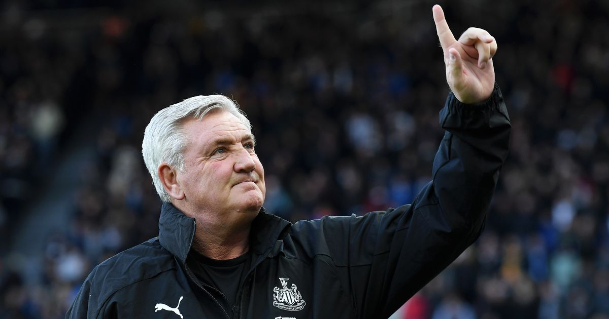
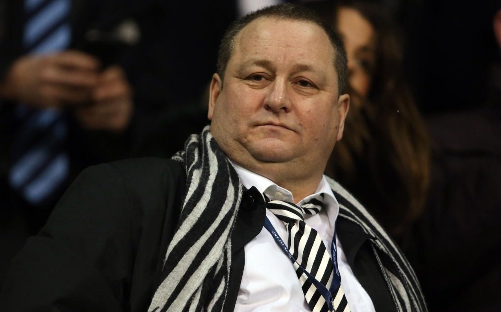

Bruce Out?
Steve Bruce remains safe in his job as Newcastle manager - but he could be at risk of the sack if his side drop into the Premier League relegation zone this weekend according to reports. The Magpies take on Wolves on Saturday night with Fulham, one place them in the table, facing London rivals Crystal Palace in the 12pm kick-off the next day. Credit - Charlie Malam, Express 24 February 2021
Takeover Troubles
Newcastle United have confirmed they have launched legal proceedings against the Premier League following a failed takeover bid in the summer. The club claim the Premier League broke a confidentiality clause when it "leaked the contents" of a letter about the proceedings to a supporter group. A Saudi Arabian-backed consortium pulled out of a £300m deal in June. They rejected the offer from the Premier League (EPL) of arbitration to determine who would own the club. Credit - BBC Sport 19 November 2020